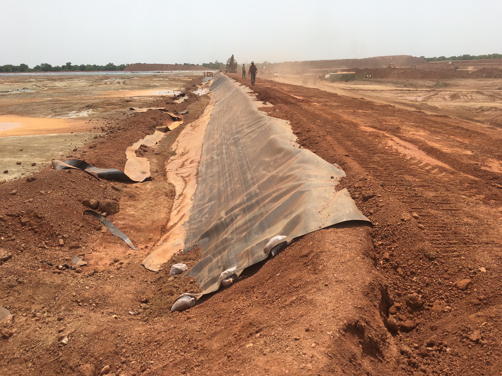
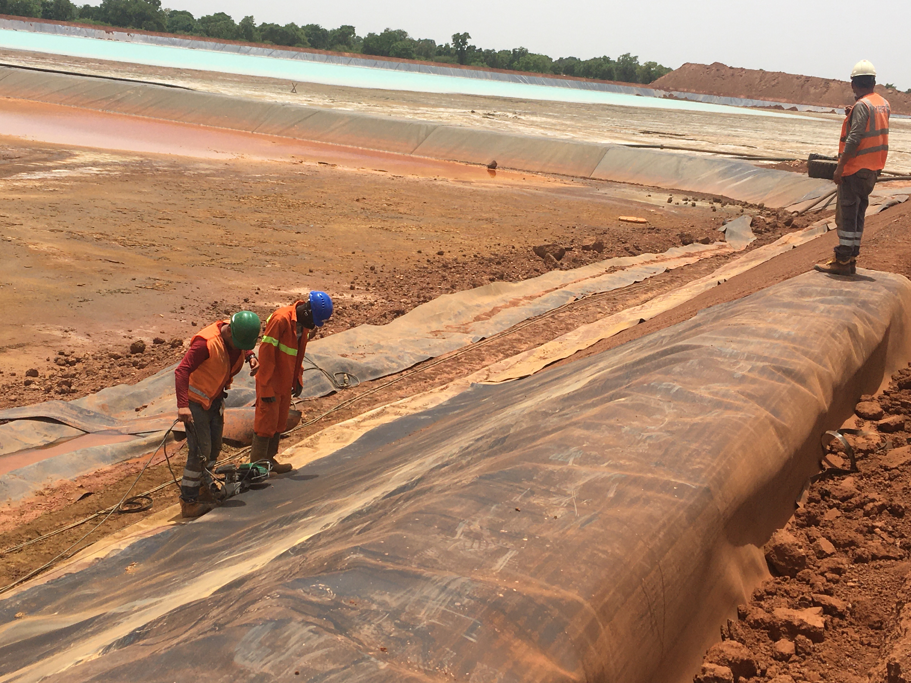
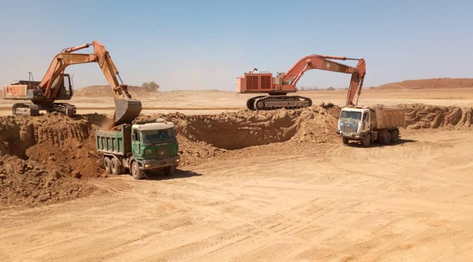
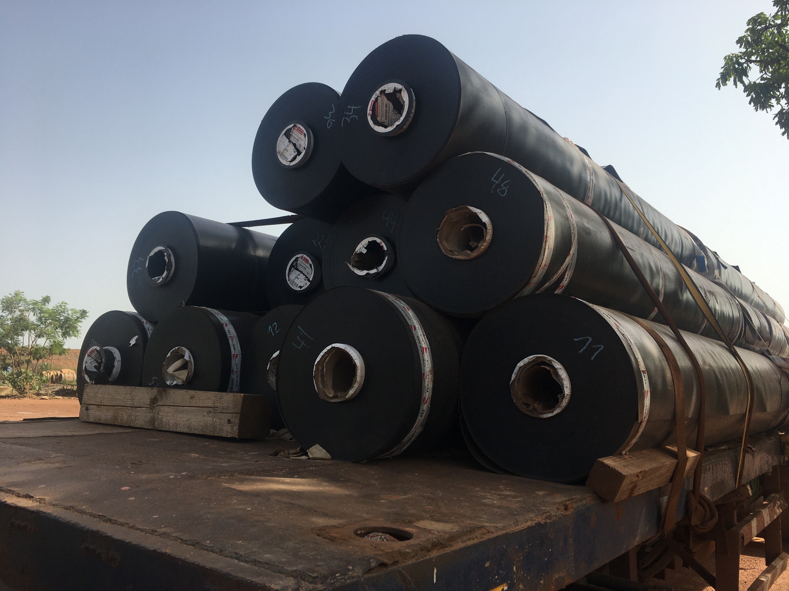
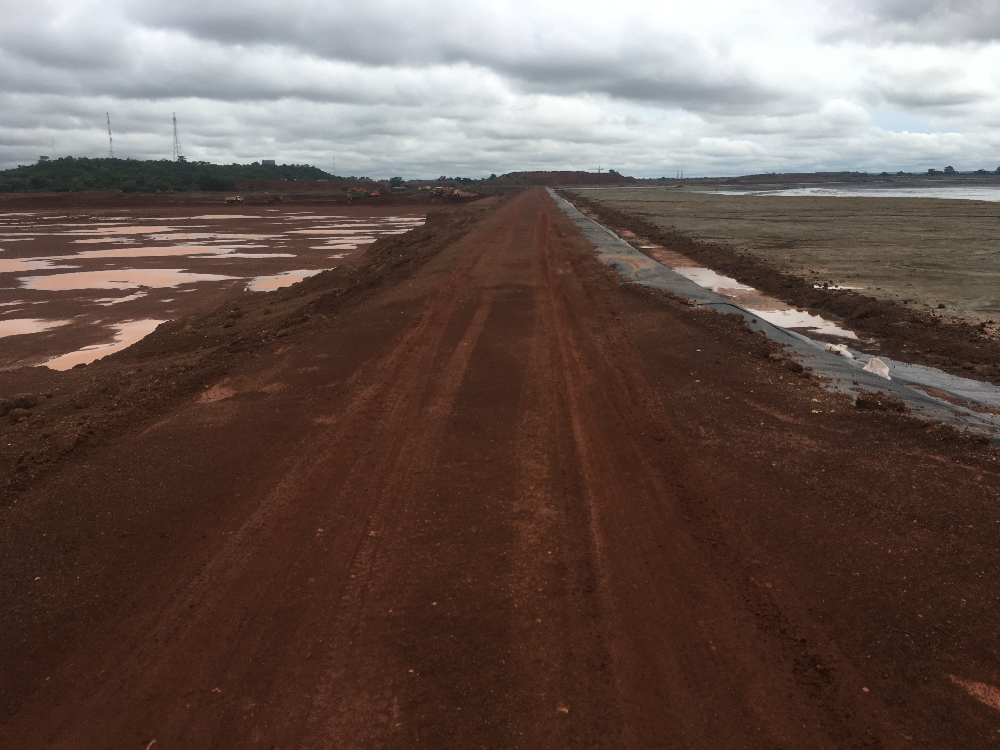
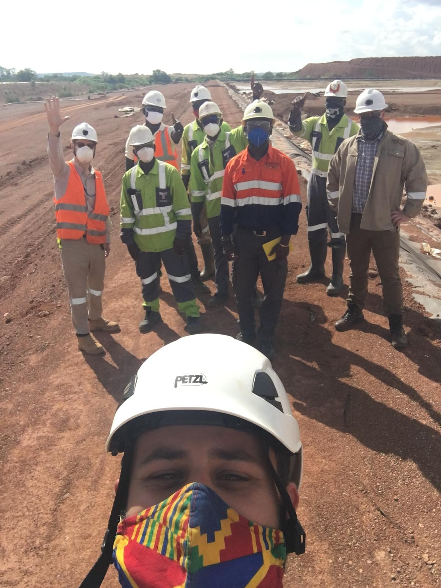
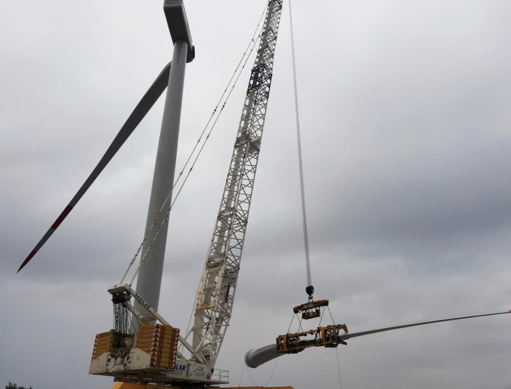
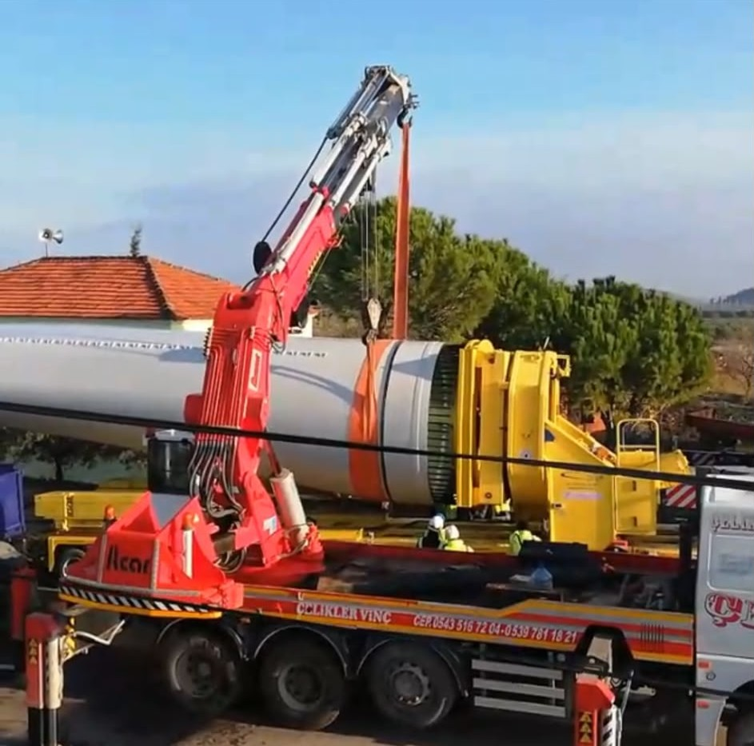
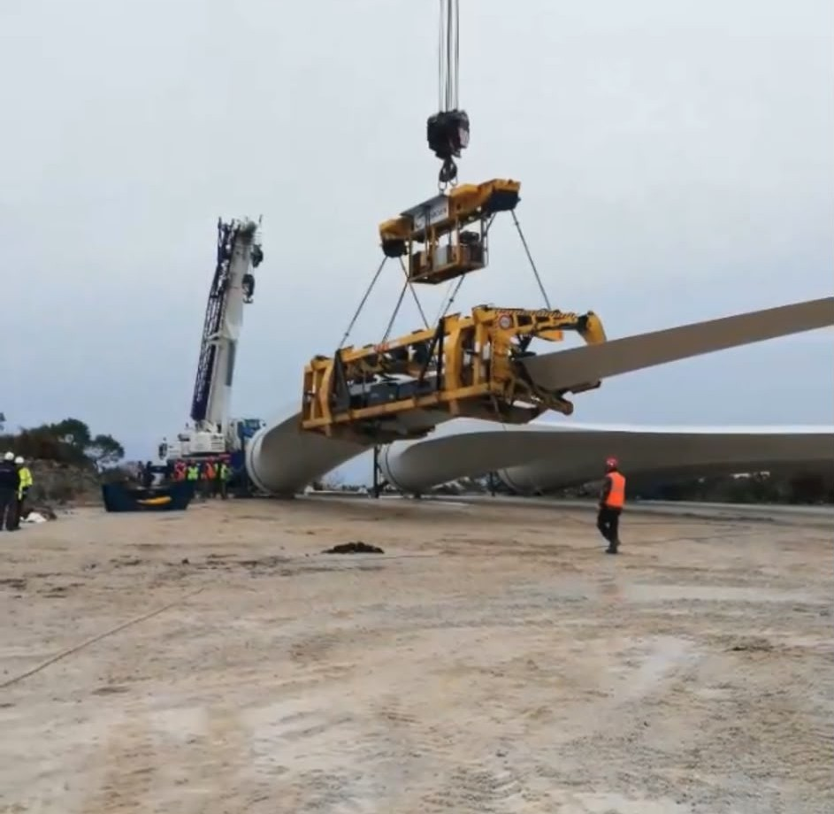
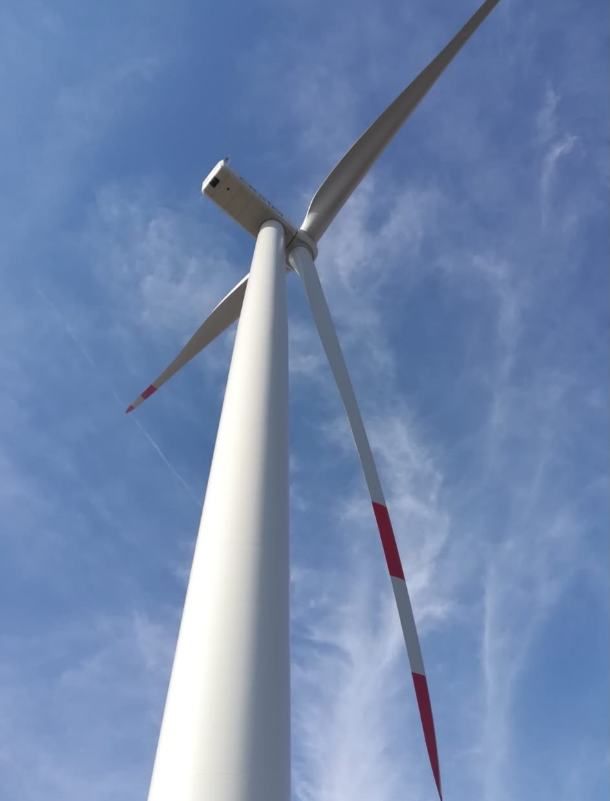

Selected Engineering Projects
A selection of major mining infrastructure and renewable energy projects demonstrating construction leadership, multidisciplinary coordination, risk-based decision-making and practical engineering delivery.
Perkoa Zinc Mine — TSF II Phase I & II Berm Raising
Urgent construction delivery to extend operational tailings storage capacity and support continued mining operations.

Project Overview
The existing Tailings Storage Facility required an urgent increase in storage capacity. I coordinated the construction of a dry-side berm raise that increased the facility crest from approximately 297.5 mamsl to 298.7 mamsl.
The completed works provided approximately 257,649 cubic metres of additional storage capacity, equivalent to approximately 432,000 tonnes of tailings at the applicable specific gravity. Based on the mine’s deposition rate, this provided approximately nine months of additional operational capacity.
Project Challenge
The available tailings capacity was approaching exhaustion and the mine required a safe, buildable and rapidly deliverable solution. The work also had to be executed without compromising ongoing operations, quality requirements or the design authority of the Engineer of Record.
My Role
- ✓ Construction planning and programme coordination
- ✓ Contractor and workforce management
- ✓ Procurement and material mobilisation
- ✓ Quality assurance and field verification
- ✓ Health and safety coordination
- ✓ Interface management with the Engineer of Record
- ✓ Reporting to mine management
Key Technical Details
- Final crest raise: 1.2 m
- Execution period: approximately 20 days
- Project cost: approximately USD 400,000
- Added storage: approximately 257,649 m³
- Geomembrane: approximately 10,900 m²
- Clay fill: approximately 14,440 m³
- Compaction requirement: 95% Standard Proctor
Engineering and Delivery Decisions
- ✓ Coordinated validation of survey and capacity information
- ✓ Supported evaluation of the initial and final raise options
- ✓ Accelerated procurement of critical liner materials
- ✓ Sequenced works around ongoing mine operations
- ✓ Maintained clear separation between construction management and design responsibility
Project Outcome
The work was completed within the urgent operational window and provided approximately nine months of additional storage capacity. This supported continued mining operations while the next phase of the Tailings Storage Facility programme progressed.
The execution involved accelerated procurement, controlled sequencing, construction quality assurance and close coordination between the mine, contractors, survey teams, quality personnel and the Engineer of Record.
Phase I & II Construction Gallery
Selected photographs showing preparation of the supporting surface, geomembrane installation, welding operations and berm construction.




Perkoa Zinc Mine — TSF II Phase III
Multidisciplinary construction management of a new Tailings Storage Facility involving major earthworks, geomembrane lining and drainage infrastructure.
Project Overview
TSF II Phase III was developed to provide the mine with long-term tailings storage capacity. The project included large-scale earthworks, geomembrane installation, drainage and leak-detection infrastructure, construction quality control and progressive commissioning activities.
I coordinated the construction programme and contractor interfaces, while the appointed Engineer of Record retained responsibility for design, technical approval and engineering verification.
Project Challenge
The project required major earthworks and specialist liner works to be delivered in a remote operating environment. Success depended on disciplined sequencing, material planning, contractor coordination and clear technical interfaces between construction teams and the Engineer of Record.
My Role
- ✓ Construction sequencing and programme management
- ✓ Contractor coordination and interface management
- ✓ Procurement evaluation and material planning
- ✓ QA/QC coordination for earthworks and geomembrane
- ✓ Progress monitoring and management reporting
- ✓ Coordination with operations and technical teams
- ✓ Safety and environmental implementation
Key Technical Details
- Facility footprint: approximately 500 m × 250 m
- Maximum height: approximately 11 m
- Earthworks: approximately 500,000 m³
- Geomembrane: approximately 170,000 m²
- Drainage pipeline: approximately 3,000 m
- Delivery period: January 2019 to March 2021
- Approximate project value: USD 7 million
Management Approach
- ✓ Coordinated multiple contractors and technical disciplines
- ✓ Monitored progress through structured reporting
- ✓ Supported supplier evaluation for geomembrane works
- ✓ Integrated survey, quality and construction information
- ✓ Maintained client, contractor and Engineer of Record interfaces
Project Outcome
The project delivered a new operational tailings storage facility through coordinated construction management, quality control and disciplined interface management between the client, contractors, survey personnel, quality teams and the Engineer of Record.
The project also demonstrated the importance of maintaining clear separation between construction management responsibility and engineering design responsibility on complex infrastructure works.
Phase III Construction Gallery
Selected photographs documenting earthworks, material mobilisation, access construction and project team coordination.




Ovacık Wind Power Plant
Civil works, logistics and turbine erection management for a utility-scale wind energy project in mountainous terrain.

Project Overview
The Ovacık Wind Power Plant included seven Nordex N131 wind turbines. Project delivery required the coordination of civil works, heavy-lift operations, turbine component logistics, route preparation and installation activities.
Each turbine blade was approximately 65.5 metres long. Transporting the blades through mountainous terrain required careful route assessment, coordination of overhead and geometric constraints, and the use of a blade-lifter system capable of raising the blade to an angle of approximately 45 degrees.
Project Challenge
The route included narrow curves, overhead constraints and limited road geometry. A conventional transport approach would have required more extensive road widening, additional temporary works and greater environmental disturbance.
My Role
- ✓ Site management and construction coordination
- ✓ Civil works and access-road preparation
- ✓ Turbine component logistics
- ✓ Blade transportation coordination
- ✓ Heavy-lift and crane interface management
- ✓ Contractor and stakeholder coordination
- ✓ Health, safety and environmental implementation
Key Technical Details
- Wind turbines: 7 Nordex N131 units
- Blade length: approximately 65.5 m
- Blade-lifter angle: up to approximately 45°
- Main erection crane: approximately 600 tonnes
- Project environment: mountainous terrain
- Key challenge: oversized component transportation
Engineering Contribution
The blade transportation strategy enabled the convoy to negotiate difficult route sections while reducing the extent of road widening that would otherwise have been required.
The solution combined route planning, access preparation, temporary traffic arrangements, specialist transportation equipment and close operational coordination.
Project Outcome
The transportation and erection activities were delivered through coordinated civil, logistics and heavy-lift planning. The blade-lifter solution provided a practical response to the project’s route constraints and later received national media coverage.
View Media CoverageProject Gallery
Selected photographs showing specialist blade transportation, heavy-lift operations and completed turbine installation.



Project Documents and Photographs
Selected project summaries, organisation charts, construction photographs, quality records and supporting evidence are indexed on the IET Fellowship page.
View IET Fellowship EvidenceEvidence Categories
- ✓ Organisation and reporting structures
- ✓ Construction photographs
- ✓ QA/QC records
- ✓ Procurement and alternatives evaluations
- ✓ Project delivery summaries
- ✓ Media and publication evidence